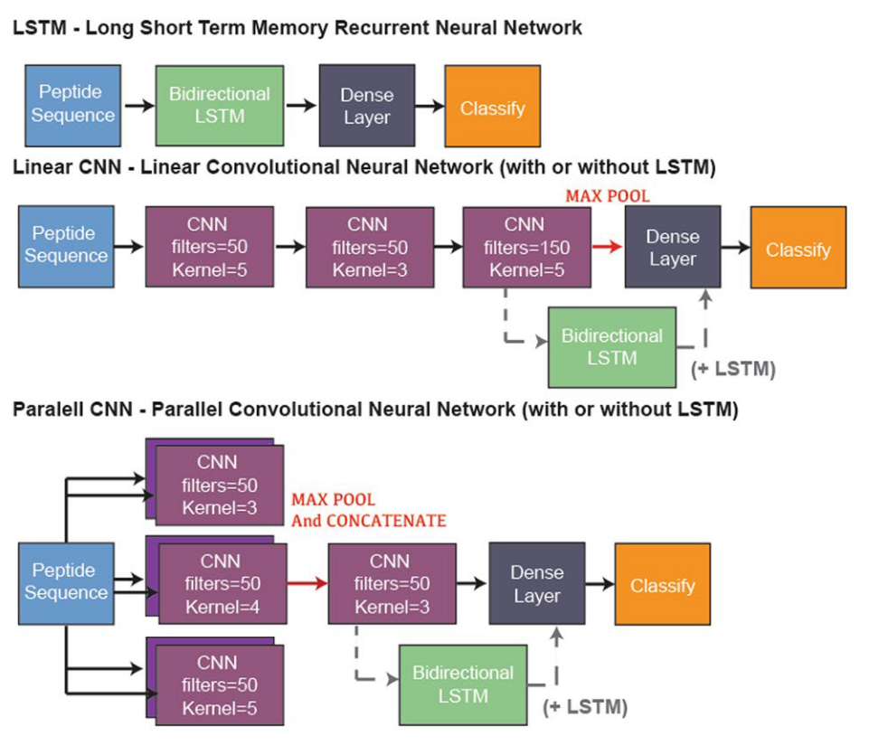

2 Methods
2.1 MetaMiner
Tandem sequences and spectra are required as input for the MetaMiner pipeline. Three of the datasets from the original paper, STANDARD, ACTI and SPACE, were used for the analysis. All analyses were carried out in the all-ORF mode and with all classes of RiPP considered.
2.1.1 Sequence data
For the STANDARD and ACTI datasets, only a selected number of strains were included in this analysis due to sequence availability. The strains used in the original paper were indicated via references to other papers. However, these bacterial species and strain names don’t match up with the strains indicated in the results section of the paper. After cross-checking the referenced papers and the results section, three strains were selected for each dataset. The amino acid sequences were downloaded from the NCBI website in the fasta format. For the SPACE dataset, the sequences were directly available from the FTP link provided on the paper. A total of 23 sequences files for 21 strains of bacteria are included in the SPACE dataset.
2.1.2 Spectra data
The tandem metabolomic data was collected via mass spectrometry by the MetaMiner research group. The files were downloaded via the FTP link provided on the paper in an mfg format. Despite having down-sampled the sequences, all spectra files included in the original research were used for this analysis instead of the corresponding sub-sample due to unclear naming of the files and hence the inability to identify spectra files for specific sequences. The authors were contacted via e-mail correspondence for data availability and clarification on the file names. However, no informative response was returned.
2.1.3 Debugging attempts
The MetaMiner pipeline continued to report errors in the genome analysis stage after detailed scrutiny of the code to debug the issue. Additionally, all sequences were analysed either as individual runs (path to one sequence as an input) or pooled together with other sequences in the same dataset in one single run (path to a directory as input). A custom python script was built to automate the process which can be found on the following GitHub repository alongside pseudocode to provide a high-level overview of the process: https://github.com/utingtseng/MSc_project2.
Pseudocode for running sequence files as separate runs
1. walk through a directory to get file names
2. parse the file names and create output directory/file names
3. generate commands for each sequence file
4. execute the commands
1. walk through a directory to get file names
2. parse the file names and create output directory/file names
3. generate commands for each sequence file
4. execute the commands
2.2 NeuRiPP
Fasta sequences of BGCs identified by antiSMASH were downloaded from the antiSMASH database. A maximum of 50 BGCs were extracted for each of the 15 RiPP classes resulting in a total of 689 BGCs in the analysis (Tab S1). The sequences were first subjected to Prodigal (18)18. Hyatt D, Chen GL, LoCascio PF, Land ML, Larimer FW, Hauser LJ. Prodigal: prokaryotic gene recognition and translation initiation site identification. BMC Bioinformatics. 2010 Mar 8;11(1):119. , a prokaryotic gene finder, for the identification of ORFs. The ORFs identified by Prodigal contain sequences that could potentially code for precursor peptides. The amino acid output from Prodigal was then classified by the main classification script of NeuRiPP for PP predictions. Three different neural network architectures were tested for the classification. The architectures include linear convolutional neural network (CNN), parallel CNN, and linear CNN + long short-term memory (lstm) (Fig. 5), which are the three architectures with the highest reported accuracy on the training set. To assess the accuracy of the classification by NeuRiPP, HMMscan (11)11. Eddy SR. Accelerated Profile HMM Searches. PLOS Comput Biol. 2011 Oct 20;7(10):e1002195. was performed on both sequences predicted to be RiPP-coding and not-RiPP-coding. In preparation for the HMMscan, 15,275 TIGRFAM models were downloaded from the NCBI website. The models were then indexed and compressed into binary data files using HMMpress (11)11. Eddy SR. Accelerated Profile HMM Searches. PLOS Comput Biol. 2011 Oct 20;7(10):e1002195. .
Figure 5. Neural network architectures used in NeuRiPP. A figuristic representation of the individual layers in the neural networks. Layers in the linear CNN are arranges in a linear fashion whereas those in the parallel CNN starts with different branches and is later concatenated into one single layer before the dense layer. Both linear and parallel are compatible with and additional LSTM network for a more complex design of the network. (extracted from de los Santos, 2019)
2.3 FBGAN
The main script of FBGAN was run to generate de novo precursor peptide sequences. Some issues occurred as the version of TensorFlow used in the original code is no longer supported. The programme failed to find the checkpoint and recreate the neural network architecture. Although it proceeded to reconstruct the architecture from scratch, the programme was killed by the system due to memory leakage. The oldest available version of tensor flow was installed to try to resolve the issue. However, the same memory leakage issue occurred despite using older versions of the package.